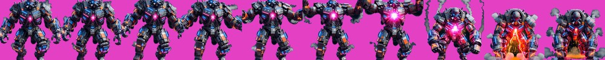

動作弧線

10 幀：站姿蓄力、核心逐漸亮起 → 雙臂舉起、核心爆亮 → 猛力下砸 → 落地衝擊（火光與煙塵）
- 逐幀差異
- 28 28 33 24 21 25 55 61 34 —— 峰值落在第 7~8 幀，正是砸下的那一刻
- 節奏
- 「慢慢舉起、瞬間砸下」，正好對得上 1.5 秒的預警：前 8 幀鋪滿倒數，衝擊幀落在傷害那一刻
- 脫離主體的殘留
- 0
- 底部占寬
- 52%（比走路的 23% 寬，是落地火光與煙塵，不是地面）
播放邏輯（已定案，尚未實作）
- 動畫只換
Sr.sprite，絕不碰 boss.Y／bs.Mode／bs.SkillT。
- 這款遊戲已經因為「Boss 站著不動」出過 bug 並修過——原始碼註解記載：中場原本是純技能循環的定點站樁，沒有砲塔可衝的場次會讓 Boss 卡在中場直到掉血進 Phase 3。動畫若鎖住位移等於把已修的 bug 裝回去。
groundSlam 的播放進度綁在 ZlAoeWarn.T 的倒數上（k = 1 − T/MaxT），不是獨立計時器——落地幀必然對在傷害那一刻，預警時間之後被調整也會自動跟上。dash 整個衝鋒模式期間播循環，跟 4~5.2 倍速的位移疊合。summon / barrage 固定 0.6 秒播完回走路；進 lastStand 強制清掉進行中的攻擊動畫。
通過的話，剩下 33 支
- 技能動畫 26 組（dash×7、summon×6、groundSlam×5、barrage×8）＝ $8.32
- 剩餘 7 隻走路動畫 ＝ $2.24
- 本試樣 $0.32 ｜ 累計美術 $15.36 ｜ Grok 額度正常